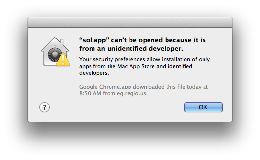
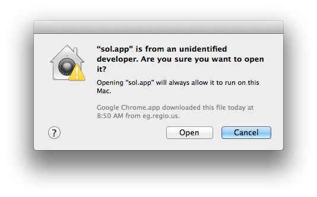

You are trying to populate a solar system with life. You can place Earth-like planets in orbit around a star. Each planet pulls on the others so you must deftly balance the gravity wells of every object in the system.
When a planet falls into a tolerable "life zone" its population grows. If a planet gets too close to Sol it burns up, if it falls too far away it freezes. If a planet collides with another planet or Sol it is destroyed. All of these have disastrous consequences for life on the planet. The goal is to satisfy the whims of Sol.
Seems to require pretty up-to-date video drivers. Please let us know if it opens and closes right away.
Unfortunately Go's poor 32-bit support means we won't be able to support 32-bit Windows. Sorry!
Running:
Running:
Note, you might get a warning that this app is from an untrusted developer. If this happens, hold down control and right click on the file.

Choose "Open".

You will only have to do this once.
| Windows 64-bit version 1.0.1 | (Tested on Windows 8.1) |
| Mac OSX version 1.0.1 | (Tested on OSX Mavericks) |
| Source code available on Github |
Please contact @kurrik if you have any issues with these builds! We want to make sure as many people get a chance to play as possible! If it doesn't work for you, let us know!
If you entered Ludum Dare please rate our submission! Available on this page
1.0.1